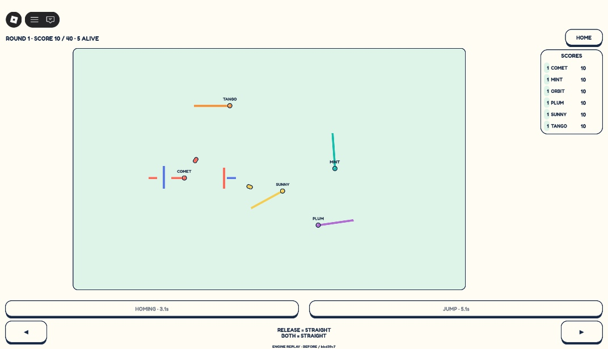
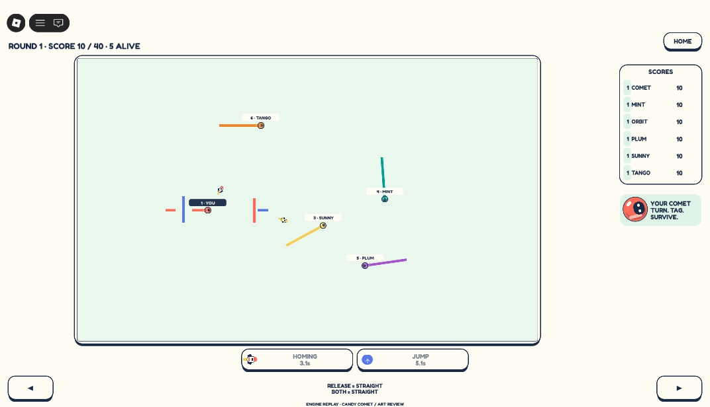
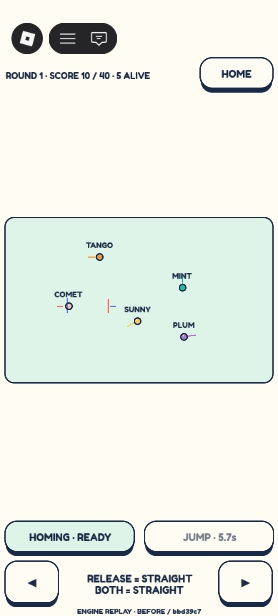
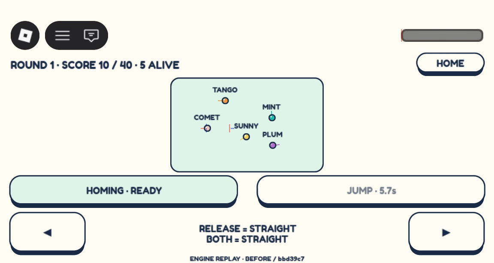
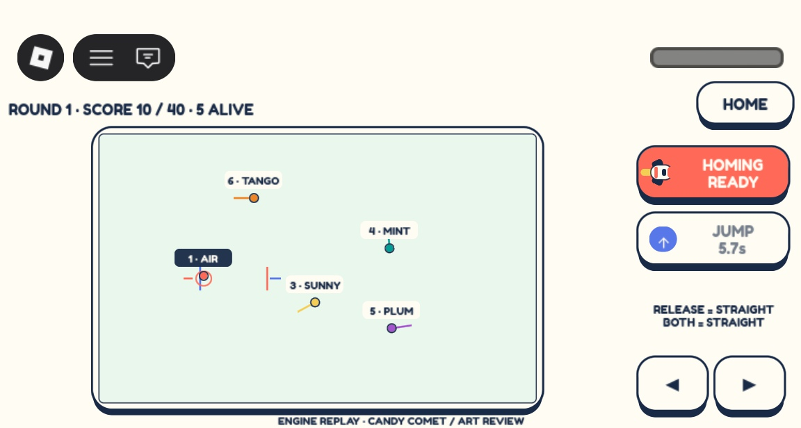
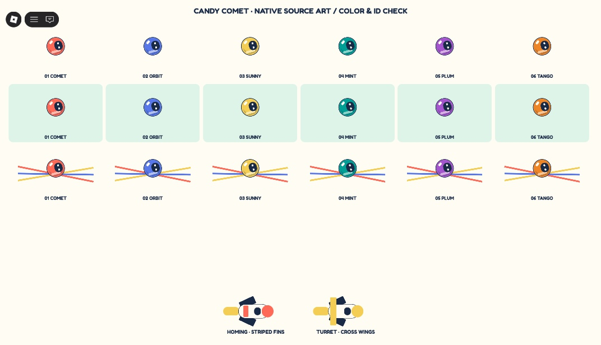

Same deterministic engine replay, matching ticks. Captures preserve Studio device-fit output. These are native renderings, not concept paintings.






Source, performance, reproduction and limitations